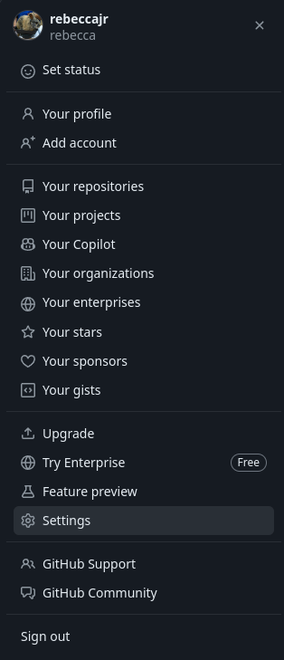
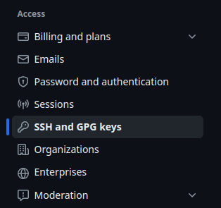
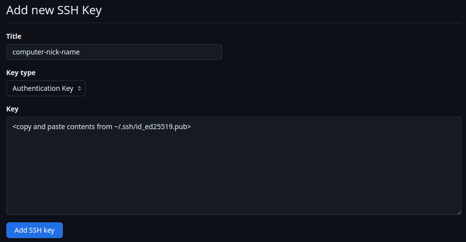
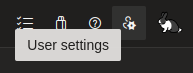
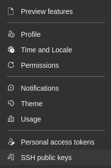
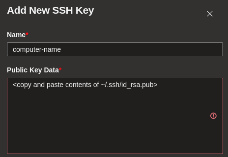

Git Reference
Quick reference for Git
This page describes common Git commands that I have encountered in my personal coding projects. It it written as a reference, but by no means a comprehensive reference.
Configuration
You can edit a git configuration either from the command line or edit a .gitconfig that lives in your home directory.
Command Line Entry
To edit a parameter from the command line that will edit your git config file, run a command in the following format:
git config --global <section>.<key> <value>For instance, if you would like to edit the user name for all commits made from an account, run the command:
git config --global user.name "Your Name"Similarly, if you would like to change the default name to main (instead of the usual default master) run the following command:
git config --global init.defaultBranch main.gitconfig file
The .gitconfig file lives in your home directory, or is created upon the first run of a git config command. It takes the format”
[section0]
key = value
[section1]
key = valueSubmodules
Add Submodule
To add a submodule, first add the repository in the web interface of your Git remote host, e.g. GitHub or Azure DevOps.
In the repository that you would like to use to contain the submodule, use the following command:
git submodule add <submodule address>E.g.
git submodule add git@github.com:rebeccajr/test-submodule.gitInitialization
When first adding a submodule, or when cloning a repository with submodules you must run:
git submodule update --init --recursiveNote The --recursive flag is only necessary if there are nested submodules, however it won’t hurt anything if there aren’t nested submodules.
Update Submodule
After the initialization of a submodule, to simply update that submodule, i.e. pull down any new commits, run:
git submodule update --recursiveSSH Key
To enable seamless authentication for Git without repeating logins, follow these steps to configure SSH keys. This guide covers setup for both GitHub and Azure DevOps.
Generate An SSH Key
GitHub
The following information was taken from the following source:
Generate an SSH key.
ssh-keygen -t ed25519 -C "email@address.com"Output
Generating public/private ed25519 key pair.Hit enter after each of the following prompts.
Enter file in which to save the key (/home/<user_name>/.ssh/id_ed25519): Enter passphrase (empty for no passphrase): Enter same passphrase again:Output
Your identification has been saved in /home/<user_name>/.ssh/id_ed25519 Your public key has been saved in /home/<user_name>/.ssh/id_ed25519.pub The key fingerprint is: ################################################## email@address.com The key's randomart image is: +--[ED25519 256]--+ | ########### | | ########### | | ########### | | ########### | | ########### | | ########### | | ########### | | ########### | | ########### | +----[SHA256]-----+Start the SSH Agent in the background.
eval "$(ssh-agent -s)"Output
Agent pid 59566Register your private SSH key with the SSH Agent.
ssh-add ~/.ssh/id_ed25519Output
Identity added: /home/flux/.ssh/id_ed25519 (email@address.com)Go to settings.

Go to SSH keys.

Click
New SSH keybutton.
Azure DevOps
The following information was taken from the following source:
Azure DevOps Key Setup Reource
Generate an SSH key.
ssh-keygen -m PEM -t rsa -b 4096Output
Generating public/private rsa key pair.Hit enter after each of the following prompts.
Enter file in which to save the key (/home/<user_name>/.ssh/id_rsa): (hit enter) Enter passphrase (empty for no passphrase): (hit enter) Enter same passphrase again: (hit enter)Output
Your identification has been saved in /home/<user_name>/.ssh/id_rsa Your public key has been saved in /home/<user_name>/.ssh/id_rsa.pub The key fingerprint is: SHA256:########################################### user@computer The key's randomart image is: +---[RSA 4096]----+ | ########### | | ########### | | ########### | | ########### | | ########### | | ########### | | ########### | | ########### | | ########### | +----[SHA256]-----+Start the SSH Agent in the background.
eval "$(ssh-agent -s)"Output
Agent pid 12956From Azure DevOps web interface


